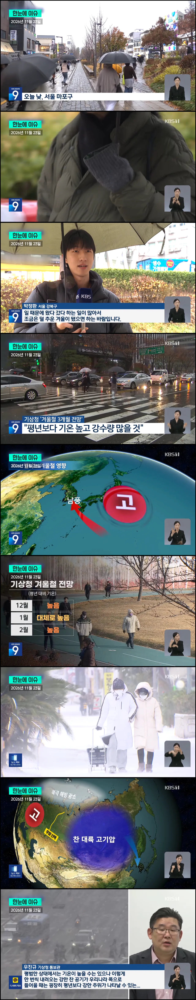

1950년 관측 시작 이후
역대 최강의 '슈퍼 엘니뇨'로
따뜻한 겨울이 예상되는데
근데 북극 빙하가 녹아서
북극 칼바람이 내려올때는
개추울수도 있다고 함

1950년 관측 시작 이후
역대 최강의 '슈퍼 엘니뇨'로
따뜻한 겨울이 예상되는데
근데 북극 빙하가 녹아서
북극 칼바람이 내려올때는
개추울수도 있다고 함
깔끔하게 정리하자
초겨울 따듯하고
그 뒤에는 추운걸로
이 게시글 내용은 언제는 춥고 언제는 따뜻 아님??? 담금질의 나라잖어
걍 삼한사온 아니야?
형태상 그건데 양 극값이 미쳐날뛰는거. 평균은 존재하는데 평균 부근값은 존재하지 않는 상황
느거매
관측하기 전에는 알 수 없는 슈뢰딩거의 날씨
따뜻한데 갑자기 ㅈㄴ 춥다 근데 그 ㅈㄴ 추운게 예측 불가야...로 보인다
그래서 눈이 좆같이 온다는거구만
겨울비 오다가 다음날 한파로 얼려버린다는거같은디
블랙아이스 장판!!
그냥 중간이 없는 극과 극의 날씨 반복이라 생각하면 됨. 평균은 별반 차이 안날거고(겨울 전체 평균값 자체는 오를수도?)
눈 개마니 오는거 아녀
지금 이해가 안 되시나본데 따뜻한 날에는 이게 겨울 맞나 싶고 추운 날에는 지미씨발 사람이 죽죽죽는다고 추추추워서 시시발련들아 일교차 30도인 날 나올 예정임 언제? 영상 15도 찍다가 그 다음날 최저기온 영하15도 찍는날 온다